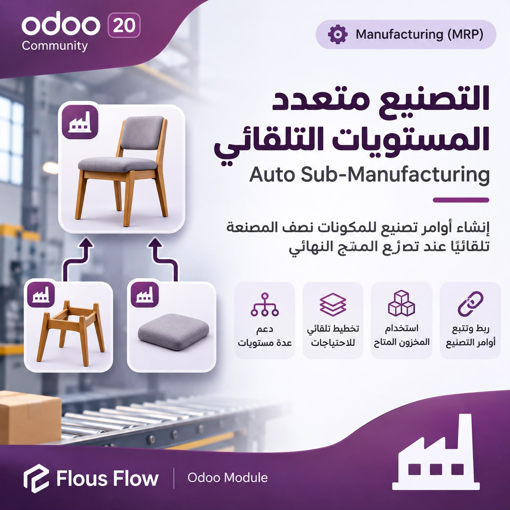

التصنيع متعدد المستويات تلقائيًا
Flous Flow Auto Sub-Manufacturing
عند تأكيد أمر تصنيع المنتج النهائي، ينشئ المديول تلقائيًا أمر تصنيع فرعي
لأي مكوّن له قائمة مواد تصنيع (BoM) خاصة به.
كيف يعمل؟
- أنشئ BoM للمنتج النهائي وأضف مكونات المنتج.
- أنشئ BoM تصنيع عادية لأي مكوّن يتم تصنيعه داخليًا.
- أكّد أمر تصنيع المنتج النهائي.
- سيُنشئ Odoo أمرًا فرعيًا للمكوّن المصنع ويربطه بالأمر الرئيسي.
مثال
لو المنتج النهائي كرسي ومكوناته مقعد وأرجل ومسامير، وكان للمقعد BoM خاصة
به، فسيتم إنشاء أمر تصنيع للمقعد تلقائيًا. الأرجل والمسامير بدون BoM تصنيع
ستظل على تدفق المخزون أو الشراء الطبيعي.
المميزات
- إنشاء أوامر التصنيع الفرعية وقت تأكيد الأمر الرئيسي.
- ربط حركة المنتج الفرعي بالأمر الرئيسي وتتبع كامل داخل Odoo.
- منع إنشاء أمر فرعي مكرر عند إعادة المحاولة.
- بدون قوائم أو أزرار أو Cron أو إعدادات إضافية.
- يعتمد على محرك التصنيع الأصلي في Odoo.
Odoo 20 Community | Dependency: Manufacturing (MRP)